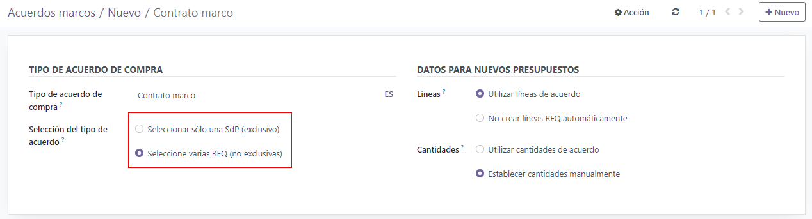
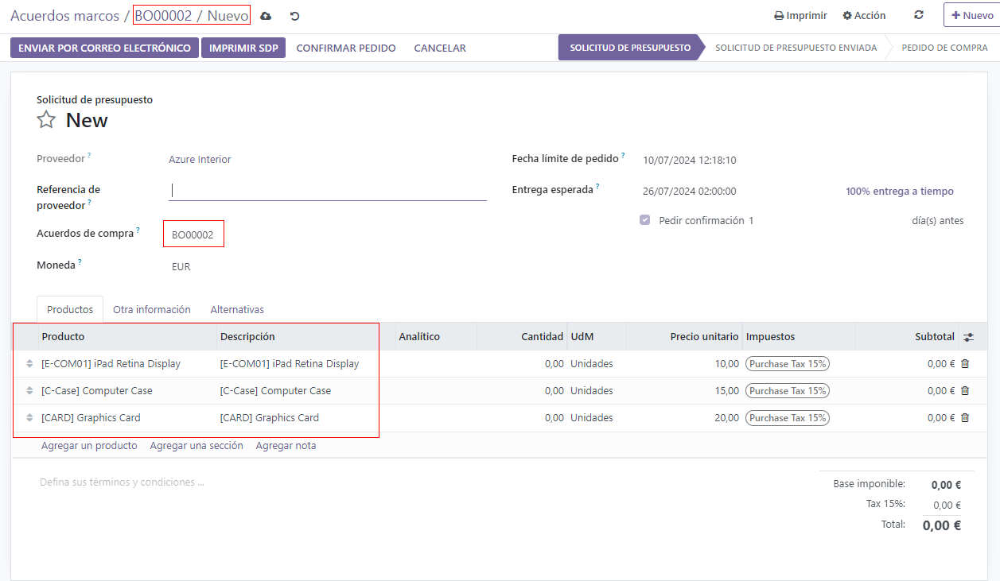
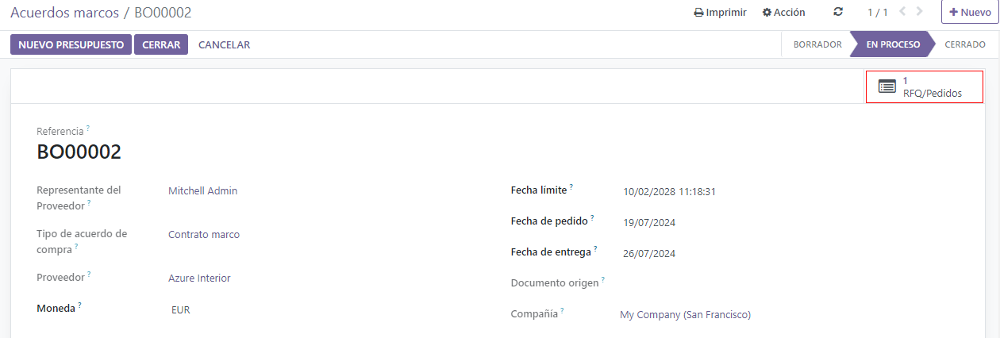
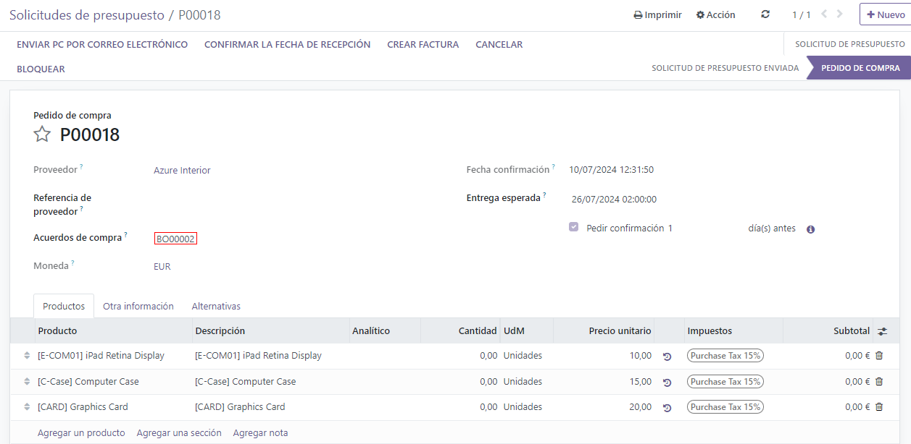
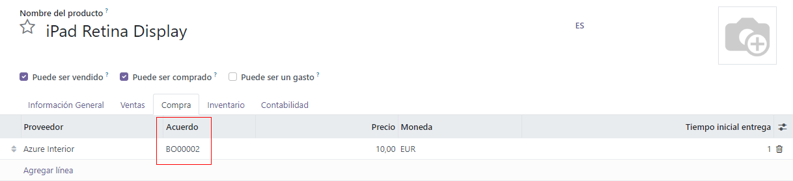

Use blanket orders to create purchase agreements with vendors¶
Blanket orders are long-term purchase agreements between a company and a vendor to deliver products on a recurring basis with predetermined pricing. Using blanket orders are useful when products are always purchased from the same vendor, but in different quantities at different times.
By simplifying the ordering process, blanket orders not only save time, they also save money, since they can be advantageous when negotiating bulk pricing with vendors.
Create a new blanket order¶
To create blanket orders, the Purchase Agreements feature first needs to be enabled in the settings of the Purchase app. To do this, go to , and under the Orders section, click the checkbox next to Purchase Agreements. Doing so will enable the ability to create blanket orders, as well as alternative requests for quotation (RFQs).

To create a blanket order, go to , and click New. This creates (and navigates to) a new blanket order form.
From this new blanket order form, different fields and settings can be configured, so there are pre-determined rules that the recurring long-term agreement must follow:
Purchase Representative: is the user assigned to this specific blanket order. By default, this is the user who created the agreement; the user can be changed directly from the drop-down menu next to this field.
Agreement Type: is the type of purchase agreement this blanket order is classified as. In Odoo, blanket orders are the only official purchase agreement.
Vendor: is the supplier to whom this agreement is tied, either once or on a recurring basis. The vendor can be selected directly from the drop-down menu next to this field.
Currency: is the agreed-upon currency that will be used for this exchange. If multiple currencies have been activated in the database, the currency can be changed from the drop-down menu next to this field.
Agreement Deadline: is the date that this purchase agreement will be set to expire on (if desired). If this blanket order should not expire, leave this field blank.
Ordering Date: is the date that this blanket order should be placed on if a new quotation is created directly from the blanket order form. If a new quotation is created, this value will automatically populate the Order Deadline field on the RFQ.
Delivery Date: is the expected delivery date that the products included in an RFQ created directly from the blanket order form will be expected to arrive. If a new quotation is created, this value will automatically populate the Expected Arrival field on the RFQ.
Source Document: is the source purchase order (PO) that this blanket order will be tied to. If this blanket order should not be tied to any existing POs, leave this field blank.
Company: is the company assigned to this specific blanket order. By default, this is the company that the user creating the blanket order is listed under. If the database is not a multi-company database, this field can not be changed, and will default to the only company listed in the database.
Once all relevant fields have been filled out, click Add a line to add products under the Product column. Then, change the quantity of each product in the Quantity column (if desired), and set a price in the Unit Price column.
Important
When adding products to a new blanket order, the pre-existing prices of products will not be added automatically to the product lines. The prices must be manually assigned by changing the value in the Unit Price column to an agreed-upon price with the listed vendor. Otherwise, the price will remain 0.
To view and change the default purchase agreement settings for blanket orders directly from the blanket order form, click the internal link (arrow icon) next to the Agreement Type field where Blanket Order is listed. This navigates to the blanket order settings.
From here, the settings for blanket orders can be edited. Under the Agreement Type section, the name of the Agreement Type can be changed (if desired), and the Agreement Selection Type can be changed, as well. There are two options that can be activated for the type of selection:
Select only one RFQ (exclusive): when a purchase order is confirmed, the remaining purchase orders will be canceled.
Select multiple RFQ (non-exclusive): when a purchase order is confirmed, remaining purchase orders will *not be canceled. Instead, multiple purchase orders are allowed.
Under the Data For New Quotations section, the settings for how product lines and quantities will be populated on new quotations using this purchase agreeement can be changed next to the Lines and Quantities fields.
There are two options that can be activated for Lines:
Use lines of agreement: when creating a new quotation, the product lines will pre-populate with the same products listed on the blanket order, if said blanket order is chosen on the new quotation.
Do not create RfQ lines automatically: when creating a new quotation and selecting an existing blanket order, the settings will carry over to the new quotation, but the product lines will not populate.
And, there are two options that can be activated for Quantities:
Use quantities of agreement: when creating a new quotation, the product quantities listed on the blanket order will pre-populate on the product lines, if said blanket order is chosen on the new quotation.
Set quantities manually: when creating a new quotation and selecting an existing blanket order, the product lines will pre-populate, but all quantities will be set to 0. The quantities will need to be manually set by the user.
Once the desired changes have been made (if any), click New (via the breadcrumbs, at the top of the page) to navigate back to the blanket order form, and click Confirm to save this new purchase agreement. Once confirmed, the blanket order changes from Draft to Ongoing, meaning this agreement can be selected and used when creating new RFQs.
Tip
After creating and confirming a blanket order, products, quantities, and prices can still be edited, added, and removed from the purchase agreement.
Create a new RFQ from the blanket order¶
After confirming a blanket order, new quotations can be created directly from the blanket order form that will use the rules set on the form and pre-populate the new quotation with the correct information. Additionally, this new quotation will be automatically linked to this blanket order form via the RFQs/Orders smart button at the top right of the form.
To create a new quotation from the blanket order form, click New Quotation. This creates (and navigates to) a new RFQ, that is pre-populated with the correct information, depending on the settings configured on the blanket order form.
From the new RFQ form, click Send by Email to compose and send an email to the listed vendor; click Print RFQ to generate a printable PDF of the quotation; or, once ready, click Confirm Order to confirm the purchase order (PO).
Once the PO has been confirmed, click back to the blanket order form (via the breadcrumbs, at the top of the page). From the blanket order form, there is now one RFQ listed in the RFQs/Orders smart button at the top right of the form. Click the RFQs/Orders smart button to see the purchase order that was just created.
Create a new blanket order from an RFQ¶
To create a new RFQ, navigate to the app, and click New.
Then, add information to the RFQ form: add a vendor from the drop-down menu next to the Vendor field, and click Add a product to select a product from the drop-down menu in the Product column. Then, set the desired purchase quantity in the Quantity column, and change the purchase price in the Unit Price column, if desired.
Clicking the additional options (two-dots) icon provides additional visibility options to add to the line item. Repeat these steps to add as many additional options as desired, including the UoM (Units of Measure) to purchase the products in, and the Expected Arrival date.
Before confirming the new quotation and creating a purchase order, click the drop-down menu next to the Blanket Order field, and type a new name for the new blanket order. This creates a brand new purchase agreement, and saves the information entered in the fields of the purchase order form, as well as the product information entered on the product lines.
From the new RFQ form, click Send by Email to compose and send an email to the listed vendor; click Print RFQ to generate a printable PDF of the quotation; or, once ready, click Confirm Order to confirm the PO.
Note
To see the newly-created blanket order purchase agreement, go to , and click into the new blanket order. From here, settings and rules can be changed, if desired.
Blanket orders and replenishment¶
Once a blanket order is confirmed, a new vendor line is added under the Purchase tab of of the products included in the BO. This makes blanket orders useful with automated replenishment, because information about the Vendor, Price, and the Agreement are referenced on the vendor line. This information is used to determine where, when, and for what price this product could be replenished.
